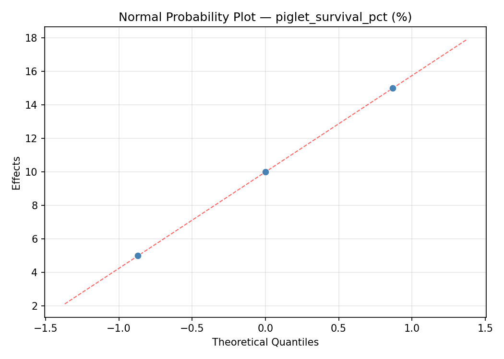
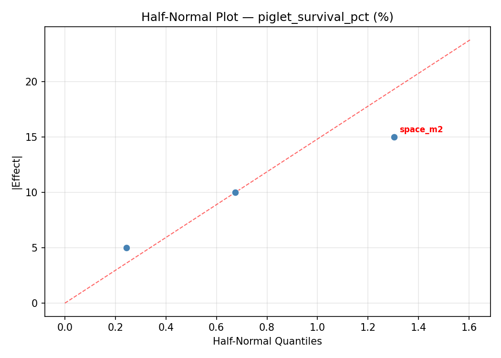
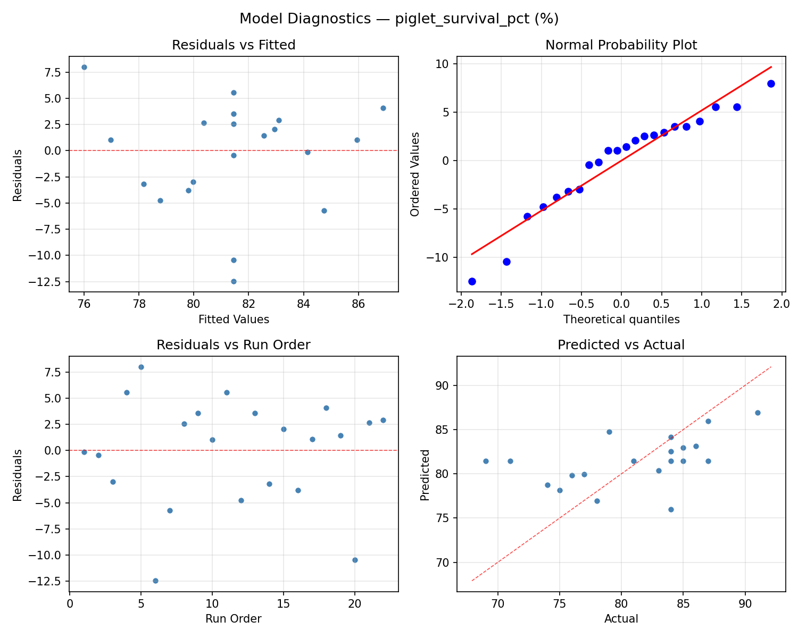
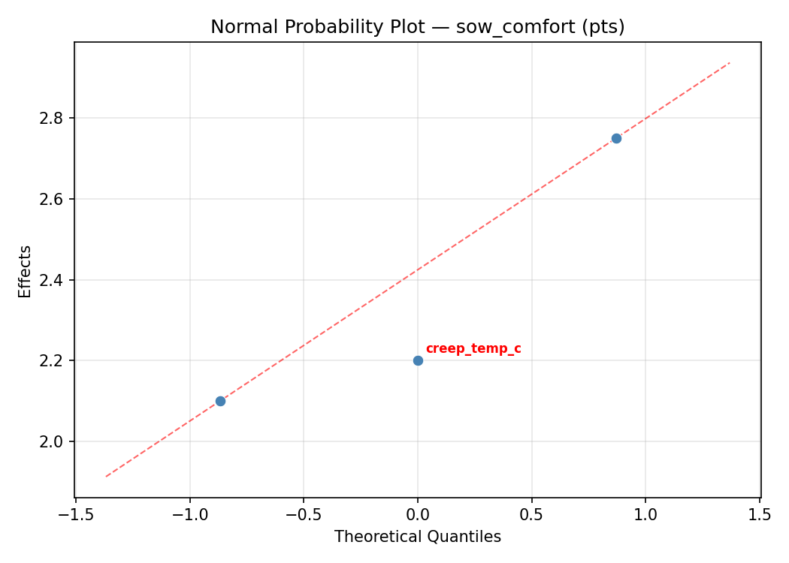
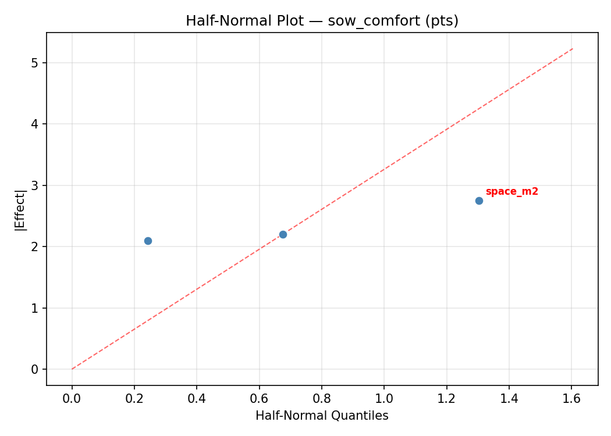
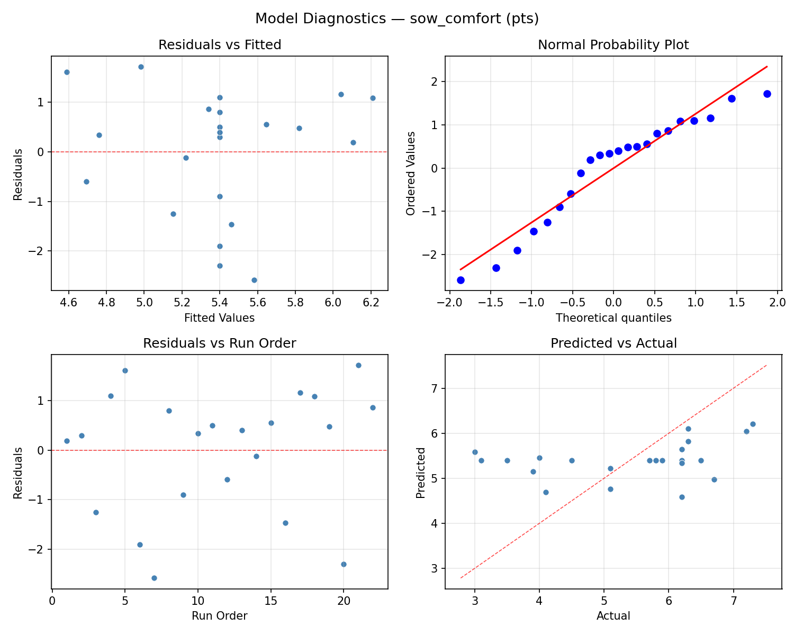

Summary
This experiment investigates pig farrowing pen design. Central composite design to maximize piglet survival and sow comfort by tuning creep area temperature, pen floor type heating, and space allowance.
The design varies 3 factors: creep temp c (C), ranging from 28 to 35, heat mat pct (%), ranging from 0 to 100, and space m2 (m2), ranging from 4 to 7. The goal is to optimize 2 responses: piglet survival pct (%) (maximize) and sow comfort (pts) (maximize). Fixed conditions held constant across all runs include breed = large_white, litter size = 12.
A Central Composite Design (CCD) was selected to fit a full quadratic response surface model, including curvature and interaction effects. With 3 factors this produces 22 runs including center points and axial (star) points that extend beyond the factorial range.
Quadratic response surface models were fitted to capture potential curvature and factor interactions. The RSM contour plots below visualize how pairs of factors jointly affect each response.
Key Findings
For piglet survival pct, the most influential factors were heat mat pct (40.0%), creep temp c (30.9%), space m2 (29.1%). The best observed value was 91.0 (at creep temp c = 25.1099, heat mat pct = 50, space m2 = 5.5).
For sow comfort, the most influential factors were space m2 (34.9%), creep temp c (33.6%), heat mat pct (31.5%). The best observed value was 7.3 (at creep temp c = 25.1099, heat mat pct = 50, space m2 = 5.5).
Recommended Next Steps
- Run confirmation experiments at the predicted optimal settings to validate the model.
- Consider whether any fixed factors should be varied in a future study.
Experimental Setup
Factors
| Factor | Low | High | Unit |
|---|
creep_temp_c | 28 | 35 | C |
heat_mat_pct | 0 | 100 | % |
space_m2 | 4 | 7 | m2 |
Fixed: breed = large_white, litter_size = 12
Responses
| Response | Direction | Unit |
|---|
piglet_survival_pct | ↑ maximize | % |
sow_comfort | ↑ maximize | pts |
Configuration
{
"metadata": {
"name": "Pig Farrowing Pen Design",
"description": "Central composite design to maximize piglet survival and sow comfort by tuning creep area temperature, pen floor type heating, and space allowance"
},
"factors": [
{
"name": "creep_temp_c",
"levels": [
"28",
"35"
],
"type": "continuous",
"unit": "C"
},
{
"name": "heat_mat_pct",
"levels": [
"0",
"100"
],
"type": "continuous",
"unit": "%"
},
{
"name": "space_m2",
"levels": [
"4",
"7"
],
"type": "continuous",
"unit": "m2"
}
],
"fixed_factors": {
"breed": "large_white",
"litter_size": "12"
},
"responses": [
{
"name": "piglet_survival_pct",
"optimize": "maximize",
"unit": "%"
},
{
"name": "sow_comfort",
"optimize": "maximize",
"unit": "pts"
}
],
"settings": {
"operation": "central_composite",
"test_script": "use_cases/295_pig_farrowing/sim.sh"
}
}
Experimental Matrix
The Central Composite Design produces 22 runs. Each row is one experiment with specific factor settings.
| Run | creep_temp_c | heat_mat_pct | space_m2 |
|---|
| 1 | 31.5 | 50 | 5.5 |
| 2 | 35 | 0 | 7 |
| 3 | 28 | 100 | 4 |
| 4 | 31.5 | 141.287 | 5.5 |
| 5 | 31.5 | 50 | 5.5 |
| 6 | 25.1099 | 50 | 5.5 |
| 7 | 31.5 | 50 | 2.76139 |
| 8 | 31.5 | 50 | 5.5 |
| 9 | 35 | 100 | 4 |
| 10 | 37.8901 | 50 | 5.5 |
| 11 | 31.5 | 50 | 5.5 |
| 12 | 31.5 | -41.2871 | 5.5 |
| 13 | 31.5 | 50 | 5.5 |
| 14 | 28 | 0 | 7 |
| 15 | 31.5 | 50 | 5.5 |
| 16 | 35 | 0 | 4 |
| 17 | 31.5 | 50 | 8.23861 |
| 18 | 35 | 100 | 7 |
| 19 | 31.5 | 50 | 5.5 |
| 20 | 28 | 0 | 4 |
| 21 | 28 | 100 | 7 |
| 22 | 31.5 | 50 | 5.5 |
Step-by-Step Workflow
1
Preview the design
$ python doe.py info --config use_cases/295_pig_farrowing/config.json
2
Generate the runner script
$ python doe.py generate --config use_cases/295_pig_farrowing/config.json \
--output use_cases/295_pig_farrowing/results/run.sh --seed 42
3
Execute the experiments
$ bash use_cases/295_pig_farrowing/results/run.sh
4
Analyze results
$ python doe.py analyze --config use_cases/295_pig_farrowing/config.json
5
Get optimization recommendations
$ python doe.py optimize --config use_cases/295_pig_farrowing/config.json
6
Multi-objective optimization
With 2 competing responses, use --multi to find the best compromise via Derringer–Suich desirability.
$ python doe.py optimize --config use_cases/295_pig_farrowing/config.json --multi
7
Generate the HTML report
$ python doe.py report --config use_cases/295_pig_farrowing/config.json \
--output use_cases/295_pig_farrowing/results/report.html
Features Exercised
| Feature | Value |
|---|
| Design type | central_composite |
| Factor types | continuous (all 3) |
| Arg style | double-dash |
| Responses | 2 (piglet_survival_pct ↑, sow_comfort ↑) |
| Total runs | 22 |
Analysis Results
Generated from actual experiment runs using the DOE Helper Tool.
Response: piglet_survival_pct
Top factors: heat_mat_pct (40.0%), creep_temp_c (30.9%), space_m2 (29.1%).
ANOVA
| Source | DF | SS | MS | F | p-value |
|---|
| Source | DF | SS | MS | F | p-value |
| creep_temp_c | 4 | 115.7879 | 28.9470 | 1.343 | 0.3264 |
| heat_mat_pct | 4 | 293.5379 | 73.3845 | 3.405 | 0.0587 |
| space_m2 | 4 | 238.4545 | 59.6136 | 2.766 | 0.0944 |
| Lack | of | Fit | 2 | 0.0000 | 0.0000 |
| Pure | Error | 7 | 150.8750 | | |
| Error | 9 | 51.6742 | 21.5536 | | |
| Total | 21 | 699.4545 | 33.3074 | | |
Pareto Chart

Main Effects Plot

Normal Probability Plot of Effects

Half-Normal Plot of Effects

Model Diagnostics

Response: sow_comfort
Top factors: space_m2 (34.9%), creep_temp_c (33.6%), heat_mat_pct (31.5%).
ANOVA
| Source | DF | SS | MS | F | p-value |
|---|
| Source | DF | SS | MS | F | p-value |
| creep_temp_c | 4 | 8.6933 | 2.1733 | 4.422 | 0.0299 |
| heat_mat_pct | 4 | 12.2300 | 3.0575 | 6.222 | 0.0110 |
| space_m2 | 4 | 15.9458 | 3.9865 | 8.112 | 0.0047 |
| Lack | of | Fit | 2 | 0.0000 | 0.0000 |
| Pure | Error | 7 | 3.4400 | | |
| Error | 9 | 0.0000 | 0.4914 | | |
| Total | 21 | 35.9800 | 1.7133 | | |
Pareto Chart

Main Effects Plot

Normal Probability Plot of Effects

Half-Normal Plot of Effects

Model Diagnostics

Response Surface Plots
3D surfaces fitted with quadratic RSM. Red dots are observed data points.
piglet survival pct creep temp c vs heat mat pct

piglet survival pct creep temp c vs space m2

piglet survival pct heat mat pct vs space m2

sow comfort creep temp c vs heat mat pct

sow comfort creep temp c vs space m2

sow comfort heat mat pct vs space m2

Multi-Objective Optimization
When responses compete, Derringer–Suich desirability finds the best compromise.
Each response is scaled to a 0–1 desirability, then combined via a weighted geometric mean.
Overall Desirability
D = 0.9545
Per-Response Desirability
| Response | Weight | Desirability | Predicted | Dir |
|---|
piglet_survival_pct |
2.0 |
|
91.00 0.9545 91.00 % |
↑ |
sow_comfort |
1.5 |
|
7.30 0.9545 7.30 pts |
↑ |
Recommended Settings
| Factor | Value |
|---|
creep_temp_c | 31.5 C |
heat_mat_pct | 50 % |
space_m2 | 5.5 m2 |
Source: from observed run #18
Trade-off Summary
Sacrifice = how much worse than single-objective best.
| Response | Predicted | Best Observed | Sacrifice |
|---|
sow_comfort | 7.30 | 7.30 | +0.00 |
Top 3 Runs by Desirability
| Run | D | Factor Settings |
|---|
| #17 | 0.8481 | creep_temp_c=31.5, heat_mat_pct=50, space_m2=5.5 |
| #4 | 0.7876 | creep_temp_c=31.5, heat_mat_pct=50, space_m2=8.23861 |
Model Quality
| Response | R² | Type |
|---|
sow_comfort | 0.6186 | quadratic |
Full Multi-Objective Output
============================================================
MULTI-OBJECTIVE OPTIMIZATION
Method: Derringer-Suich Desirability Function
============================================================
Overall desirability: D = 0.9545
Response Weight Desirability Predicted Direction
---------------------------------------------------------------------
piglet_survival_pct 2.0 0.9545 91.00 % ↑
sow_comfort 1.5 0.9545 7.30 pts ↑
Recommended settings:
creep_temp_c = 31.5 C
heat_mat_pct = 50 %
space_m2 = 5.5 m2
(from observed run #18)
Trade-off summary:
piglet_survival_pct: 91.00 (best observed: 91.00, sacrifice: +0.00)
sow_comfort: 7.30 (best observed: 7.30, sacrifice: +0.00)
Model quality:
piglet_survival_pct: R² = 0.6385 (quadratic)
sow_comfort: R² = 0.6186 (quadratic)
Top 3 observed runs by overall desirability:
1. Run #18 (D=0.9545): creep_temp_c=31.5, heat_mat_pct=50, space_m2=5.5
2. Run #17 (D=0.8481): creep_temp_c=31.5, heat_mat_pct=50, space_m2=5.5
3. Run #4 (D=0.7876): creep_temp_c=31.5, heat_mat_pct=50, space_m2=8.23861
Full Analysis Output
=== Main Effects: piglet_survival_pct ===
Factor Effect Std Error % Contribution
--------------------------------------------------------------
heat_mat_pct 11.0000 1.2304 40.0%
creep_temp_c 8.5000 1.2304 30.9%
space_m2 8.0000 1.2304 29.1%
=== ANOVA Table: piglet_survival_pct ===
Source DF SS MS F p-value
-----------------------------------------------------------------------------
creep_temp_c 4 115.7879 28.9470 1.343 0.3264
heat_mat_pct 4 293.5379 73.3845 3.405 0.0587
space_m2 4 238.4545 59.6136 2.766 0.0944
Lack of Fit 2 0.0000 0.0000 0.000 1.0000
Pure Error 7 150.8750 21.5536
Error 9 51.6742 21.5536
Total 21 699.4545 33.3074
=== Summary Statistics: piglet_survival_pct ===
creep_temp_c:
Level N Mean Std Min Max
------------------------------------------------------------
25.1099 1 86.0000 0.0000 86.0000 86.0000
28 4 77.5000 6.6081 69.0000 85.0000
31.5 12 82.6667 5.5323 74.0000 91.0000
35 4 80.0000 6.2183 71.0000 85.0000
37.8901 1 84.0000 0.0000 84.0000 84.0000
heat_mat_pct:
Level N Mean Std Min Max
------------------------------------------------------------
-41.2871 1 85.0000 0.0000 85.0000 85.0000
0 4 75.0000 6.3246 69.0000 83.0000
100 4 82.5000 3.0000 79.0000 85.0000
141.287 1 74.0000 0.0000 74.0000 74.0000
50 12 83.5833 4.8516 75.0000 91.0000
space_m2:
Level N Mean Std Min Max
------------------------------------------------------------
2.76139 1 76.0000 0.0000 76.0000 76.0000
4 4 81.5000 3.4157 77.0000 85.0000
5.5 12 84.0000 4.8804 74.0000 91.0000
7 4 76.0000 7.3937 69.0000 85.0000
8.23861 1 78.0000 0.0000 78.0000 78.0000
=== Main Effects: sow_comfort ===
Factor Effect Std Error % Contribution
--------------------------------------------------------------
space_m2 2.1333 0.2791 34.9%
creep_temp_c 2.0500 0.2791 33.6%
heat_mat_pct 1.9250 0.2791 31.5%
=== ANOVA Table: sow_comfort ===
Source DF SS MS F p-value
-----------------------------------------------------------------------------
creep_temp_c 4 8.6933 2.1733 4.422 0.0299
heat_mat_pct 4 12.2300 3.0575 6.222 0.0110
space_m2 4 15.9458 3.9865 8.112 0.0047
Lack of Fit 2 0.0000 0.0000 0.000 1.0000
Pure Error 7 3.4400 0.4914
Error 9 0.0000 0.4914
Total 21 35.9800 1.7133
=== Summary Statistics: sow_comfort ===
creep_temp_c:
Level N Mean Std Min Max
------------------------------------------------------------
25.1099 1 6.2000 0.0000 6.2000 6.2000
28 4 4.1500 1.4154 3.0000 6.2000
31.5 12 5.7083 1.1309 4.0000 7.3000
35 4 5.3250 1.5500 3.1000 6.7000
37.8901 1 6.2000 0.0000 6.2000 6.2000
heat_mat_pct:
Level N Mean Std Min Max
------------------------------------------------------------
-41.2871 1 4.5000 0.0000 4.5000 4.5000
0 4 4.3000 1.6330 3.1000 6.7000
100 4 5.1750 1.4660 3.0000 6.2000
141.287 1 4.1000 0.0000 4.1000 4.1000
50 12 6.0250 0.9196 4.0000 7.3000
space_m2:
Level N Mean Std Min Max
------------------------------------------------------------
2.76139 1 4.0000 0.0000 4.0000 4.0000
4 4 5.6250 1.2203 3.9000 6.7000
5.5 12 5.9833 0.9703 4.1000 7.3000
7 4 3.8500 1.3178 3.0000 5.8000
8.23861 1 5.1000 0.0000 5.1000 5.1000
Optimization Recommendations
=== Optimization: piglet_survival_pct ===
Direction: maximize
Best observed run: #18
creep_temp_c = 25.1099
heat_mat_pct = 50
space_m2 = 5.5
Value: 91.0
RSM Model (linear, R² = 0.1413, Adj R² = -0.0018):
Coefficients:
intercept +81.4545
creep_temp_c -2.3533
heat_mat_pct -0.8063
space_m2 -0.7412
RSM Model (quadratic, R² = 0.6552, Adj R² = 0.3966):
Coefficients:
intercept +84.0598
creep_temp_c -2.3533
heat_mat_pct -0.8063
space_m2 -0.7412
creep_temp_c*heat_mat_pct +2.7500
creep_temp_c*space_m2 -2.0000
heat_mat_pct*space_m2 -0.0000
creep_temp_c^2 -0.7026
heat_mat_pct^2 +0.3474
space_m2^2 -3.5526
Curvature analysis:
space_m2 coef=-3.5526 concave (has a maximum)
creep_temp_c coef=-0.7026 concave (has a maximum)
heat_mat_pct coef=+0.3474 convex (has a minimum)
Notable interactions:
creep_temp_c*heat_mat_pct coef=+2.7500 (synergistic)
creep_temp_c*space_m2 coef=-2.0000 (antagonistic)
Predicted optimum (from quadratic model, at observed points):
creep_temp_c = 28
heat_mat_pct = 0
space_m2 = 7
Predicted value: 87.3203
Surface optimum (via L-BFGS-B, quadratic model):
creep_temp_c = 28
heat_mat_pct = 0
space_m2 = 5.76574
Predicted value: 89.7256
Model quality: Moderate fit — use predictions directionally, not precisely.
Factor importance:
1. creep_temp_c (effect: 20.0, contribution: 49.9%)
2. space_m2 (effect: 14.6, contribution: 36.4%)
3. heat_mat_pct (effect: 5.5, contribution: 13.7%)
=== Optimization: sow_comfort ===
Direction: maximize
Best observed run: #18
creep_temp_c = 25.1099
heat_mat_pct = 50
space_m2 = 5.5
Value: 7.3
RSM Model (linear, R² = 0.0603, Adj R² = -0.0963):
Coefficients:
intercept +5.4000
creep_temp_c -0.3046
heat_mat_pct -0.1957
space_m2 -0.1299
RSM Model (quadratic, R² = 0.3680, Adj R² = -0.1061):
Coefficients:
intercept +5.6211
creep_temp_c -0.3046
heat_mat_pct -0.1957
space_m2 -0.1299
creep_temp_c*heat_mat_pct +0.7000
creep_temp_c*space_m2 -0.4250
heat_mat_pct*space_m2 -0.1250
creep_temp_c^2 -0.0505
heat_mat_pct^2 +0.1895
space_m2^2 -0.4705
Curvature analysis:
space_m2 coef=-0.4705 concave (has a maximum)
heat_mat_pct coef=+0.1895 convex (has a minimum)
creep_temp_c coef=-0.0505 negligible curvature
Notable interactions:
creep_temp_c*heat_mat_pct coef=+0.7000 (synergistic)
creep_temp_c*space_m2 coef=-0.4250 (antagonistic)
Predicted optimum (from linear model, at observed points):
creep_temp_c = 28
heat_mat_pct = 0
space_m2 = 4
Predicted value: 6.0302
Surface optimum (via L-BFGS-B, linear model):
creep_temp_c = 28
heat_mat_pct = 0
space_m2 = 4
Predicted value: 6.0302
Model quality: Weak fit — consider adding center points or using a different design.
Factor importance:
1. creep_temp_c (effect: 4.2, contribution: 54.4%)
2. space_m2 (effect: 2.4, contribution: 30.7%)
3. heat_mat_pct (effect: 1.2, contribution: 14.9%)